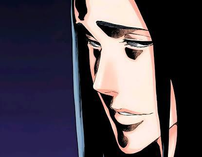

Animes
Bleach: Espadas, Estilo e o Mundo Espiritual
Conheça um poco da obra prima BLEACH um dos tres grandes. Iconico e Eterna obra. Inspiração para muitas outrs.
Olá! Meu nome é Lucas Eduardo de Godoy. Criei esta página para compartilhar com aqueles interessados em saber um pouco sobre mim e também, é claro, compartilhar um pouquinho sobre a minha vida. Good luck in your journey about me! Se você quiser ver mais, recomendo o "Eu".

Animes
Conheça um poco da obra prima BLEACH um dos tres grandes. Iconico e Eterna obra. Inspiração para muitas outrs.

Fotografia
Deixe-me agracialos com minhas fotos do Céu.

Culinária
Uma sobremesa clássica, rápida e refrescante para surpreender a sua família no próximo almoço de domingo.
Visite a aba Blog para ver todo o catálogo!